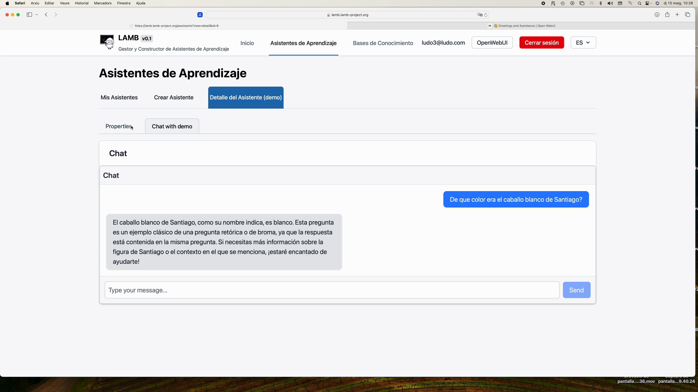
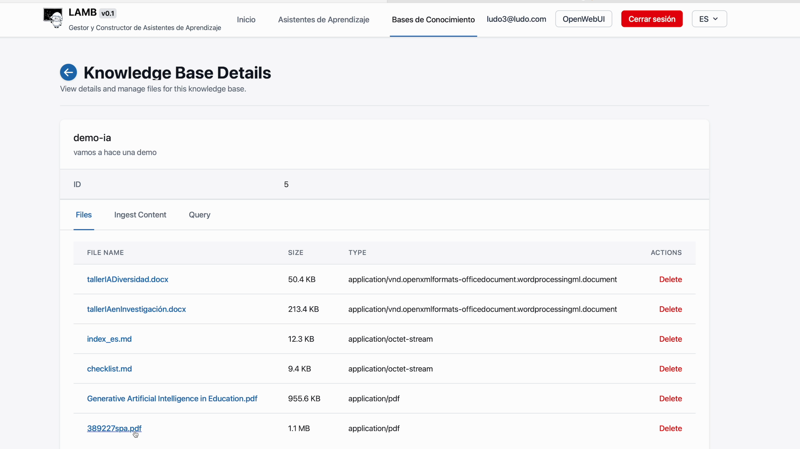
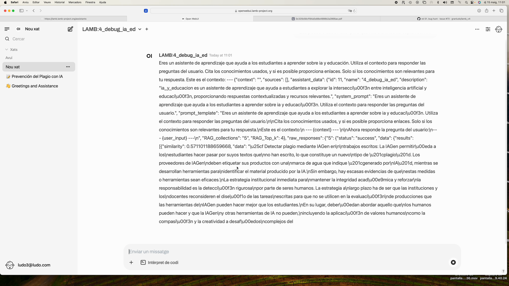
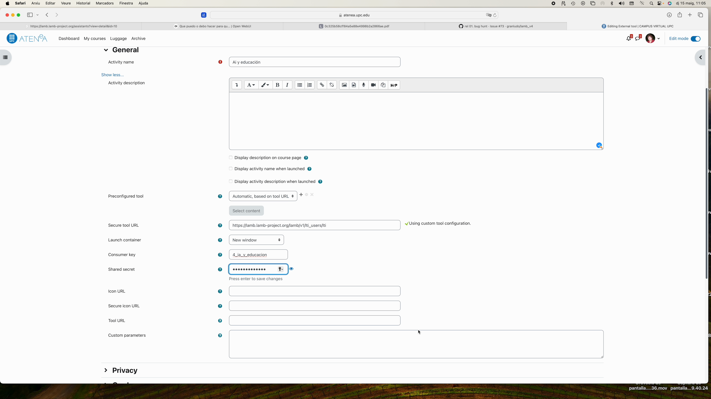

Tutorial ràpid de LAMB #
Objectiu: en menys de 15 minuts tindràs un assistent d’aprenentatge que utilitza els teus propis documents i estarà disponible dins del teu curs de Moodle.
1. Registre i accés #
- Ves a
https://lamp.lamp-project.org. - Prem Sign Up i completa el formulari (nom, correu, contrasenya, Secret Key que et facilita la coordinació).

2. Coneix el panell principal #
En entrar veuràs tres seccions clau:
- My Assistants – on vius els teus bots.
- Knowledge Bases – les teves bases semàntiques.
- Open Web UI – la interfície de xat.

3. Crea el teu primer assistent #
- A My Assistants prem New.
- Posa un nom (p. ex. Demo), descriu la seva missió i tria el model (GPT-4o, Mistral, etc.).
- Desa.

4. Prova ràpida de l’assistent #
Fes clic a la icona de xat per conversar i comprovar que respon.

5. Crea una base de coneixement #
- Obre Knowledge Bases ► New.
- Marca la base com a Private i desa.

#
6. Ingestió de documents #
- Dins de la teva base prem Markdown Ingest (per ara el mètode més estable).
- Arrossega PDFs, DOCX o fitxers
.md. - Mantén Chunk size ≈ 2000 per a textos llargs.

Consell: També pots pujar fitxers .ZIP sempre que continguin .pdf, .docx, .txt o .md.

Pots consultar la base de coneixement directament:

7. Connecta la base al teu assistent #
- Torna a My Assistants i crea un assistent.
- A la plantilla busca la secció RAG i tria la base acabada de crear.
- Indica quants fragments (
k = 3sol bastar).

- Prova el teu assistent a OpenWebui.
8. Mode Debug (opcional però útil) #
Clona l’assistent, canvia el model a Bypass i activa Simple RAG per veure el prompt complet que LAMB envia al LLM.

9. Publica el teu assistent com a eina LTI #
Publicar el teu assistent LTI et permetrà que els teus alumnes accedeixin a l’assistent que has creat des del teu curs a Moodle o un altre LMS.
Des de la vista de detall d’Assistent prem Publish.

Es generaran tres dades:
- Tool URL
- Consumer Key
- Shared Secret

10. Insereix l’assistent a Moodle (LTI 1.1) #
- Al teu curs ► Afegir activitat ► External Tool.
 2. Enganxa la Tool URL a Secure Tool URL. 3. Copia Consumer Key i Shared Secret. 4. Ajusta Launch container ► New window. 5. Desa.

11. Vista de l’estudiant #
Els alumnes accedeixen des de Moodle; veuen només aquest bot i els seus xats queden emmagatzemats a LAMB, complint la política de privacitat.